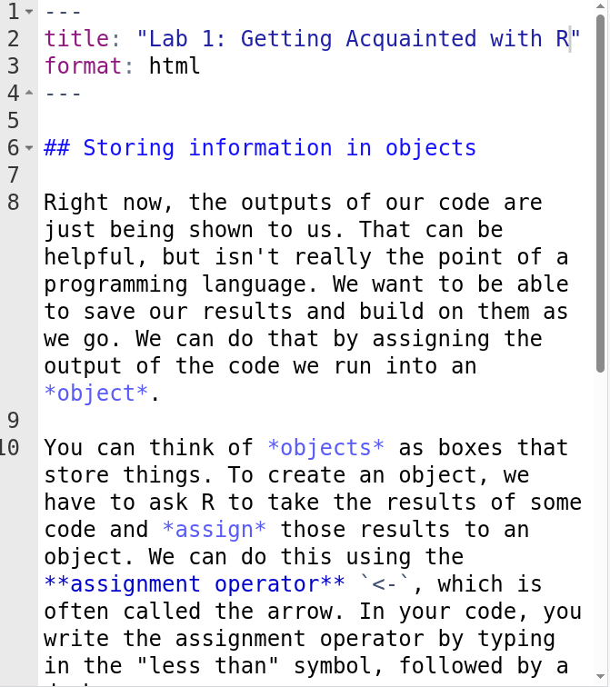
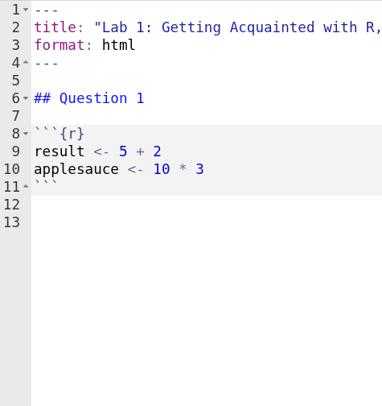
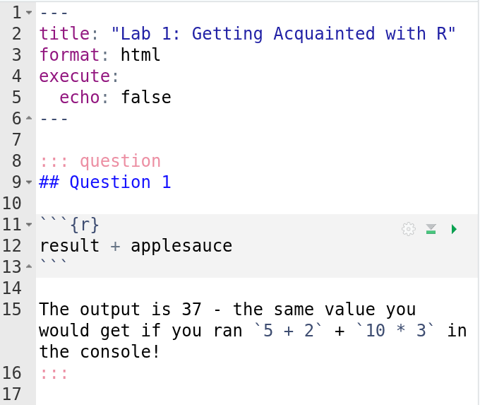
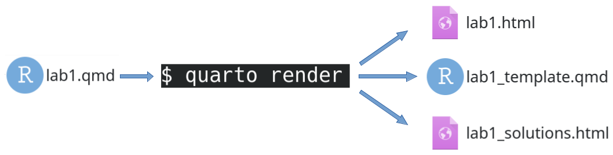
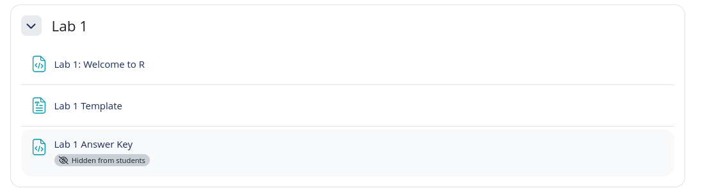

# remotes::install_github("wjhopper/moodleR)
library(moodleR)The LTS Document
Will Hopper
Smith College
A Typical In-Class Activity
A “lab” with instructions

A template with scaffolding

A solutions guide

The Hidden Pain of Good Assignments
Each of these is a separate document to create, distribute, and maintain
- You changed the variables names in the lab
- Did you also change the template?
- And re-render the solutions?
We needed to solve this problem to scale SDS 100: Reproducible Scientific Computing with Data up for 100’s of students and several simultaneous instructors (that change each semester!)
The Solution: The LTS Document Format

What Does an LTS Document Look Like?
---
title: "Lab 1: Getting Acquainted with R, RStudio and Quarto"
editor: source
format: lts-html:
---
## Creating Objects
You can think of *objects* as boxes that store things. To create an object, we have to ask R to take the results of some code and *assign* those results to an object. We can do this using the **assignment operator** `<-`, which is often called the arrow. In your code, you write the assignment operator iby typing in the "less than" symbol, followed by a dash.
::: question
In the console, type in `result <- 5 + 2` and press <kbd>Enter</kbd> to run the code.
Then, type in `applesauce <- 10 * 3` in the console and press <kbd>Enter</kbd> to run the code.
Then, write an answer the following questions in your Lab 1 Quarto document:
- What happens in the RStudio "Environment" pane when you use the assignment operator to create a new object?
- What *doesn't* happen in the console when you use the assignment operator to create a new object?
:::
::: solution
- The name of each object is shown, along with its computed value.
- The computed result is *not* printed out
:::
::: question
In your template file, locate the code chunk that looks like this:
```{r}
#| echo: fenced
result <- 5 + 2
applesauce <- 10 * 3
```
Enter a blank line at the end of this code chunk, and write the command `result + applesauce` on the blank line. Then click the green triangle "play" button in the upper right hand corner of the code chunk to execute the code in the chunk. What is the result?
:::
::: solution
```{r}
result + applesauce
```
The output is 37 - the same value you would get if you ran `5 + 2` + `10 * 3` in the console!
:::How Does it Work?
- Each
lts-htmldocument is parsed using a Quarto project pre-rendering script (written in Lua for portability)- The
.questiondivs are written into a new*_template.qmdfile - The
.solutiondivs are written into a new*_solutions.qmdfile
- The
- The lab, template, and solutions are rendered into HTML documents
- A pandoc filter strips all
.solutiondivs from the main lab file during rendering
- A pandoc filter strips all
Getting Started with LTS
To start a new project:
LTS in Action
How It Started
demo/
├── _extensions
│ └── wjhopper
│ └── lts
├── _quarto.yml
└── lab1.qmdHow It’s Going
quarto render
demo/
├── _extensions
│ └── wjhopper
│ └── lts
├── _quarto.yml
├── lab1.html <-
├── lab1.qmd
├── lab1_solutions.html <-
├── lab1_solutions.qmd
├── lab1_template.html
├── lab1_template.qmd <-The Lab: lab1.html
The Template: lab1_template.qmd
---
title: "Lab 1: Getting Acquainted with R, RStudio and Quarto"
format: html
---
## Question 1
In the Console, enter 5 + 2 and press Enter to run the code.
## Question 2
In the console, type in result <- 5 + 2 and press Enter to run the code.
Then, type in applesauce <- 10 * 3 in the console and press Enter to run the code.
Then, write an answer the following questions in your Lab 1 Quarto document:
- What happens in the RStudio "Environment" pane when you use the assignment operator to create a new object?
- What doesn't happen in the console when you use the assignment operator to create a new object?
## Question 3
In your template file, locate the code chunk that looks like this:
```{r}
result <- 5 + 2
applesauce <- 10 * 3
```
Enter a blank line at the end of this code chunk, and write the command result + applesauce on the blank line. Then click the green triangle "play" button in the upper right hand corner of the code chunk to execute the code in the chunk. What is the result?The Solutions: lab1_solutions.qmd
Meet the moodleR Package!
Let’s upload these to our course’s Moodle using the moodleR package!
moodleR speeds up common but repetitive and click-heavy tasks in Moodle by allowing you to script them from
- Moodle doesn’t really have a full-fledged web API (and good luck getting your IT admin to turn it on for you anyway!)
- So
moodleRconducts much of its business as though it were a web browser
Tell Me Who Are You?
Every File Needs a Home
Navigate to the course using it’s ID, and create a new section
Uploading to Moodle
Add each file to the page using moodleR::upload_file()
moodleR::upload_file(tab, section = "Lab 1", title = "Lab 1: Welcome to R", path = "lab1.html")
moodleR::upload_file(tab, section = "Lab 1", title = "Lab 1 Template", path = "lab1_template.qmd")
moodleR::upload_file(tab, section = "Lab 1", title = "Lab 1 Answer Key", path = "lab1_solutions.html",
visible = FALSE # Keep solutions hidden until after class
)
MoodleR Spotlight: Creating and Populating Groups
You have a group project coming up, and want team to submit their work on Moodle
# A tibble: 15 × 3
group_name name email_address
<chr> <chr> <chr>
1 The Shamoners Rose Lia rlia@smith.edu
2 The Shamoners Art I. Cuno acuno@smith.edu
3 The Shamoners Drag A. Pult dpult@smith.edu
4 Slow Starters Reg I. Gigas rgigas@smith.edu
5 Slow Starters Drake O. Vish dvish@smith.edu
6 Slow Starters Don D. Ozo ddozo@smith.edu
7 Dream World Sam U. Rott srott@smith.edu
8 Dream World Rogg N. Rola rrola@smith.edu
9 Dream World Krook O. Dile kdile@smith.edu
10 DRA Drag A. Pult dpult@smith.edu
11 DRA Rose Lia rlia@smith.edu
12 DRA Art I. Cuno acuno@smith.edu
13 Banworthy Chan D. Lure clure@smith.edu
14 Banworthy Zam A. Zenta zzenta@smith.edu
15 Banworthy Drake O. Vish dvish@smith.edu MoodleR Spotlight: Creating and Populating Groups
Normally, creating 5 new groups and populating them with 3 members each would require manual data entry for group and person, and several dozens of clicks

MoodleR Spotlight: Project Rotation Schedules
In SDS 100, we have a phased group project where students collaborate on an exploratory data analysis
Each student chooses their own data set, and starts their own report
Each week, they rotate data sets, and pick up the report where their group mate left off
We help students keep track of who’s doing what each week by posting a project rotation schedule


MoodleR Spotlight: Project Rotation Schedules
Step 1: Create the Schedule
{ifingroup 63501} is a Moodle FilterCodes that restricts visibility to members of a specific group
{ifingroup 63501}
<h5 id="phase-1">Phase 1</h5>
<ul>
<li><strong>Chan D. Lure</strong> will write the data description for their own data, and send all the neccesary materials to Zam A. Zenta when the data description is fully completed.</li>
<li><strong>Zam A. Zenta</strong> will write the data description for their own data, and send all the neccesary materials to Drake O. Vish when the data description is fully completed.</li>
<li><strong>Drake O. Vish</strong> will write the data description for their own data, and send all the neccesary materials to Chan D. Lure when the data description is fully completed.</li>
</ul>
<h5 id="phase-2">Phase 2</h5>
<ul>
<li><strong>Zam A. Zenta</strong> will pick up where Chan D. Lure left off in the prior phase, and summarize Chan’s Data. They will send all the neccesary materials to Drake O. Vish when the summaries are fully complete.</li>
<li><strong>Drake O. Vish</strong> will pick up where Zam A. Zenta left off in the prior phase, and summarize Zam’s Data. They will send all the neccesary materials to Chan D. Lure when the summaries are fully complete.</li>
<li><strong>Chan D. Lure</strong> will pick up where Drake O. Vish left off in the prior phase, and summarize Drake’s Data. They will send all the neccesary materials to Zam A. Zenta when the summaries are fully complete.</li>
</ul>
<h5 id="phase-3">Phase 3</h5>
<ul>
<li><strong>Drake O. Vish</strong> will pick up where Zam A. Zenta left off in the prior phase, and visualize Chan’s Data. They will send all the neccesary materials to Chan D. Lure when the visualizations are fully complete.</li>
<li><strong>Chan D. Lure</strong> will pick up where Drake O. Vish left off in the prior phase, and visualize Zam’s Data. They will send all the neccesary materials to Zam A. Zenta when the visualizations are fully complete.</li>
<li><strong>Zam A. Zenta</strong> will pick up where Chan D. Lure left off in the prior phase, and visualize Drake’s Data. They will send all the neccesary materials to Drake O. Vish when the visualizations are fully complete.</li>
</ul>
<h5 id="phase-4">Phase 4</h5>
<ul>
<li><strong>Chan D. Lure</strong> will pick up where Drake O. Vish left off, and describe the ethical impacts of their own data.</li>
<li><strong>Zam A. Zenta</strong> will pick up where Chan D. Lure left off, and describe the ethical impacts of their own data.</li>
<li><strong>Drake O. Vish</strong> will pick up where Zam A. Zenta left off, and describe the ethical impacts of their own data.</li>
</ul>
{\ifingroup 63501}MoodleR Spotlight: Project Rotation Schedules

moodleR Honorable Mentions
moodleR::download_quiz_responses()- Downloads quiz responses and file attachments in one batch (similar to how Moodle allows you to download all submissions for an assignment)
moodleR::get_course_roster()moodleR::export_gradebook()